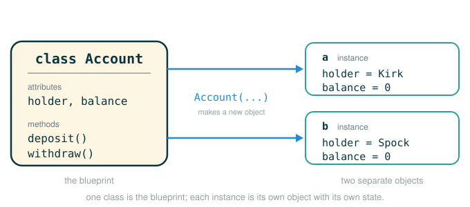

2.5 Objects, Classes, and Instance State
By the end of this lesson you will be able to do five things: explain what an object is and why it is different from an ordinary value, write a class statement to define your own kind of object, create an instance of that class, store and read instance attributes, and write an __init__ constructor that sets up each new object the moment it is born.
The big shift in this chapter is this. So far, most of the values you have built were passive: a number just sits there, a list just holds items. An object is a value that carries both information and behavior in one bundle, and it can remember how that information changes over time. That memory is the whole point, so we will spend real effort watching state change step by step.
Why Objects Exist
Earlier in this chapter we built values that respond to messages by hand, using functions plus a dictionary that maps a message name to the code that handles it. A bank account built that way could remember a balance and react to a request like deposit or withdraw. That technique works, but it is fiddly: the dispatching logic is written out by hand every time.
Object-oriented programming brings three ideas you have already met into one clean piece of syntax. It combines data abstraction (bundling related data behind a name), message passing (asking a value to do something rather than poking at its internals), and mutable local state (data that changes over time while staying private to one value). Python classes give you all three at once, with far less plumbing than building dispatch dictionaries by hand.
An Intuitive Picture: ID Cards From One Template
Picture a school's ID card system. The school designs one template for the card: every card has a slot for a student name, a slot for an ID number, and printed rules for what the card can unlock. The template itself is not anybody's card. It is the design.
Then the office prints physical cards from that template. Maya gets a card; Jordan gets a card. Both follow the same design, but they hold different names and different numbers. Punching a new door code into Maya's card does not touch Jordan's card. They are separate objects that happen to share a design.
That picture maps directly onto the vocabulary of this lesson:
- The class is the template. It describes what every card has and what every card can do.
- An instance is one physical card printed from the template.
- An attribute is one piece of information stored on a card, like the name or the number.
- A method is one behavior the card can perform, like unlock this door.
The key consequence is independence. Two instances made from the same class have their own separate information. Changing one does not change the other.
The Formal Idea in Python
In Python, every value you have ever used is already an object: numbers, strings, lists, dictionaries. Each one bundles data together with the operations that make sense for it. A list, for example, knows how to report its own length and how to append an item. You did not have to teach it those abilities; they come with being a list.
What is new here is that you get to define your own kinds of objects. You write a class that says what data each object holds and what behaviors it supports. Then you create as many independent instances of that class as you want.
The figure below shows the class as a blueprint and the independent instances stamped from it, each carrying its own instance state.

A class gives us three layers the machine must keep straight, and confusing them is the most common beginner mistake:
a name in an environment -> refers to one object
one object -> holds its own instance attributes
the object's class -> holds the methods shared by all instancesDon't worry about how methods work yet; we build them up from scratch later in this lesson. For now just note that they live on the class, not on each individual object.
The contrast with a plain function is worth saying out loud. A function usually takes inputs, computes one output, and then forgets everything. An object is built to persist: it can be handed message after message, and each one can change the state it carries forward to the next.
A First Bank Account, End to End
A bank account is a natural first object. As information it holds the account holder's name and a current balance. As behavior it can take a deposit, allow a withdrawal, and report the balance. Here is a complete class so you can see one working before we dissect each part:
# (1)
class Account:
def __init__(self, account_holder):
self.balance = 0
self.holder = account_holder
def deposit(self, amount):
self.balance = self.balance + amount
return self.balance
def withdraw(self, amount):
if amount > self.balance:
return 'Insufficient funds'
self.balance = self.balance - amount
return self.balance
This defines a new kind of object named Account. Every account made from it will carry its own balance and its own holder, and every account will know how to deposit and withdraw. We will rebuild this class one layer at a time, starting from the smallest possible version, so that no single piece arrives unexplained.
The Shape of a Class Statement
Python creates a user-defined class with a class statement. Its skeleton is:
class <name>:
<suite>Reading that one line at a time:
class <name>:
├─ class ........ keyword that tells Python to build a new class object
├─ <name> ....... the name the new class object will be bound to
├─ : ............ begins the indented body of the class
└─ performs ..... creates the class object and runs <suite> to fill itThe <suite> is the indented block beneath the header. When Python executes a class statement, it runs that block, and every name assigned inside it (including every def) becomes an attribute of the class. So the methods you write inside the body are not loose functions floating in the program; they are stored on the class itself, ready to be shared by every instance.
By convention, class names use CapWords: Account, not account. That capital letter is a quiet signal to a reader that the name refers to a class.
The Constructor: __init__
When you create a new object, Python needs a way to set it up: give it a starting balance, record whose account it is. That setup job belongs to a specially named method, __init__. The name has two underscores before init and two underscores after it. Python looks for that exact name automatically whenever an object is constructed; you never call it by hand.
Here is the smallest useful Account class, just the constructor:
# (2)
class Account:
def __init__(self, account_holder):
self.balance = 0
self.holder = account_holder
Walk the method header one token at a time:
def __init__(self, account_holder):
├─ def .............. begins a function definition
├─ __init__ ......... the special constructor name Python calls on construction
├─ ( ................ begins the parameter list
├─ self ............. the brand-new object being initialized
├─ , ................ separates the parameters
├─ account_holder ... the value the caller passes in
├─ ) ................ ends the parameter list
├─ : ................ begins the method body
└─ defines .......... how to set up each freshly created AccountThe first parameter, self, is the object being built. You do not pass it yourself; Python supplies it automatically and binds it to the new instance. The second parameter, account_holder, is whatever the caller hands in.
Now the two lines inside the constructor. The first one:
self.balance = 0
├─ self ......... the new object being initialized
├─ . ............ attribute assignment on that object
├─ balance ...... the attribute name being created
├─ = ............ store the value on the right into that attribute
├─ 0 ............ the starting balance
└─ performs ..... attaches an attribute balance holding 0 to this objectThe second one:
self.holder = account_holder
├─ self ............. the new object being initialized
├─ . ................ attribute assignment on that object
├─ holder ........... the attribute name being created
├─ = ................ store the value on the right into that attribute
├─ account_holder ... the local parameter passed into __init__
└─ performs ......... copies the caller's name into this object's holder attributeThere is a subtle but important contrast hiding in those two lines. The name account_holder is a local parameter: it lives only while __init__ is running and disappears the moment the constructor finishes. The name self.holder is an instance attribute: it is attached to the object and survives long after the constructor returns. The constructor's job is to copy the temporary value into the permanent home.
Instantiating a Class
Creating an object from a class is called instantiating the class, and the resulting object is an instance. Python uses call syntax for this, exactly as if the class were a function:
# (3)
a = Account('Kirk')
Read that line one token at a time:
a = Account('Kirk')
├─ a ............ the name that will refer to the new object
├─ = ............ assignment: bind the name on the left to the value on the right
├─ Account ...... the class object, used here to construct an instance
├─ ('Kirk') ..... the argument handed into construction, becomes account_holder
└─ evaluates to a new Account object, now bound to aThe result is the part beginners most often get wrong: Account('Kirk') does not evaluate to the string 'Kirk' or to a number. It evaluates to a brand-new object. Here is the exact sequence the machine performs when it sees Account('Kirk'):
1. Look up the class object named Account.
2. Create a new, empty Account instance.
3. Invoke Account.__init__ on that new instance.
4. Bind self to the new instance.
5. Bind account_holder to 'Kirk'.
6. Run the body: store balance = 0 and holder = 'Kirk' on the instance.
7. Discard the __init__ call frame and hand back the completed object.
8. Bind the name a to that completed Account object.Notice step 7. You did not write a return statement in __init__, and you should not: the constructor's job is to fill in the object, and Python returns the finished instance for you.
Reading Instance Attributes
Once an object exists, you read its stored information with dot notation: the object, a dot, then the attribute name.
# (4)
a.balance
a.holder
Here is the original session, with Python's answers printed beneath each line:
>>> a.balance
0
>>> a.holder
'Kirk'Walk the dot expression one token at a time:
a.holder
├─ a ........... an expression that evaluates to an Account object
├─ . ........... the attribute-lookup operator
├─ holder ...... the name of an attribute to find on that object
└─ evaluates to 'Kirk'The name holder here is not a global variable. It belongs to the object. If Python sees holder written on its own, it searches the current environment for that name. If Python sees a.holder, it instead evaluates a to find an object and then looks for an attribute named holder on that specific object. Because attributes belong to individual objects, each Account carries its own holder and its own balance.
Bridge Example: An Even Simpler Object
Before we add behavior, build the smallest object you can fully predict by hand. This class stores a single attribute and nothing else:
# (5)
class Dog:
def __init__(self, name):
self.name = name
self.tricks = 0
Trace it yourself. After fido = Dog('Fido') runs, the constructor binds self to the new object, binds name to 'Fido', then stores self.name = 'Fido' and self.tricks = 0. So fido.name is 'Fido' and fido.tricks is 0:
>>> fido = Dog('Fido')
>>> fido.name
'Fido'
>>> fido.tricks
0If you can predict those two answers without running anything, you understand instantiation and instance attributes. The official Account works by the exact same mechanism; it just stores a balance and a holder instead of a name and a trick count.
Each Instance Has Its Own Identity
Because attributes belong to individual objects, two instances made from the same class are genuinely separate. Make a second account and change only its balance:
# (6)
b = Account('Spock')
b.balance = 200
[acc.balance for acc in (a, b)]
>>> b = Account('Spock')
>>> b.balance = 200
>>> [acc.balance for acc in (a, b)]
[0, 200]Both accounts came from the same Account class, yet they are not the same object. Setting b.balance to 200 left a.balance sitting at 0. The list comprehension walks both objects and reads each one's own balance, showing the two independent values side by side.
Python lets you test whether two names refer to the very same object using the is and is not operators:
# (7)
a is a
a is not b
>>> a is a
True
>>> a is not b
TrueReading a is not b one token at a time:
a is not b
├─ a ........... an expression evaluating to an object
├─ is not ...... true when the two sides are different objects
├─ b ........... an expression evaluating to an object
└─ evaluates to Truea is a is True because both sides are literally the same object. a is not b is True because the Kirk account and the Spock account are distinct objects in memory. The is operator does not ask whether two objects look alike; it asks whether they are the same single object.
That distinction matters most for assignment, which does not copy an object:
# (8)
c = a
c is a
>>> c = a
>>> c is a
TrueThe line c = a does not build a new account. It binds the name c to the same object that a already names. Now c and a are two labels on one object, which is exactly why c is a is True. Anything you do to c.balance you will also see through a.balance, because there is only one object underneath both names.
Adding Behavior: Methods
So far our object can only hold information. A method is a function defined inside a class body, meant to operate on an instance of that class. Here is the full Account class, now with deposit and withdraw methods, exactly as it first appeared:
# (9)
class Account:
def __init__(self, account_holder):
self.balance = 0
self.holder = account_holder
def deposit(self, amount):
self.balance = self.balance + amount
return self.balance
def withdraw(self, amount):
if amount > self.balance:
return 'Insufficient funds'
self.balance = self.balance - amount
return self.balance
Each method takes self as its first parameter, just like __init__. Look at deposit:
def deposit(self, amount):
├─ def ......... begins a function definition
├─ deposit ..... the method name, stored as an attribute of the class
├─ ( ........... begins the parameter list
├─ self ........ the account object receiving the call
├─ , ........... separates the parameters
├─ amount ...... the number the caller passes in
├─ ) ........... ends the parameter list
├─ : ........... begins the method body
└─ defines ..... how any Account adds amount to its own balanceThe body of deposit says self.balance, not a.balance and not spock_account.balance. That is deliberate. The same method body has to work for every account ever created, so it refers to its object through the generic name self. Whichever account you call it on becomes self for that one call.
Calling Methods and Watching State Change
Now use the full class on the Kirk account a we built earlier. With the methods defined, we can send a a message by writing the object, a dot, the method name, and the arguments. Here is the original session, deposit then withdraw then withdraw again, with Python's answers printed beneath each line:
# (10)
a.deposit(15)
a.withdraw(10)
a.balance
a.withdraw(10)
>>> a.deposit(15)
15
>>> a.withdraw(10)
5
>>> a.balance
5
>>> a.withdraw(10)
'Insufficient funds'Walk this one call at a time, because the balance is changing underneath it. The Kirk account a started at 0. The call a.deposit(15) adds 15 to the balance and deposit returns the new balance, so Python prints 15. The call a.withdraw(10) checks that 10 is not more than the current balance of 15, subtracts it, and withdraw returns the new balance, so Python prints 5. Reading a.balance confirms the object kept that change: it prints 5, not 15. The final a.withdraw(10) now compares 10 against a balance of only 5, finds 10 > 5 is true, returns 'Insufficient funds', and leaves the balance untouched.
The two a.withdraw(10) calls are byte-for-byte identical text, yet they produce different results, because the object remembered its changed balance between them. That memory is the whole point of an object, and we will see it again immediately on a second, independent account.
A Second, Independent Account
Make a fresh account and exercise it the same way. Because each instance has its own state, none of these calls touch the Kirk account a. The original session creates the account, makes a deposit and two withdrawals, and reads the holder:
# (11)
spock_account = Account('Spock')
spock_account.deposit(100)
spock_account.withdraw(90)
spock_account.withdraw(90)
spock_account.holder
>>> spock_account = Account('Spock')
>>> spock_account.deposit(100)
100
>>> spock_account.withdraw(90)
10
>>> spock_account.withdraw(90)
'Insufficient funds'
>>> spock_account.holder
'Spock'Read spock_account.deposit(100) one token at a time:
spock_account.deposit(100)
├─ spock_account ... an expression evaluating to an Account object
├─ . ............... attribute lookup, then a call on the found method
├─ deposit ......... the method to run, found on the object's class
├─ (100) ........... the argument bound to amount; self is supplied automatically
└─ evaluates to 100In a method call like this, the object before the dot does two jobs at once, and the second one is the part beginners miss:
1. It tells Python which class to search for the method named deposit.
2. It is bound to self inside that method call.Watch the balance change across the session, because this is the heart of object state. The account starts at 0. After deposit(100) the balance is 100, and deposit returns it. After withdraw(90) the balance is 10, and withdraw returns it. The second withdraw(90) now compares 90 > 10, finds it true, returns 'Insufficient funds', and leaves the balance untouched. The two calls to withdraw(90) are byte-for-byte identical, yet they produce different results, because the object remembered its changed balance between calls. That memory is what separates an object from a plain function:
same object + changed state -> a later call can produce a different resultThe final line, spock_account.holder, just reads back the attribute set during construction: 'Spock'.
A Step-by-Step Construction Trace
It is worth slowing down to watch a single construction build its environment, because frames and attributes are exactly where this gets confusing. Consider:
# (12)
class Account:
def __init__(self, account_holder):
self.balance = 0
self.holder = account_holder
a = Account('Kirk')
When the class statement runs, the global frame gains the name Account bound to the new class object. When Account('Kirk') runs, Python creates a new instance and opens a temporary __init__ call frame:
__init__ call frame (temporary, while __init__ runs)
self -> the new Account object
account_holder -> 'Kirk'Inside that frame, self.balance = 0 and self.holder = account_holder attach two attributes to the new object. When __init__ finishes, the call frame is discarded, but the object keeps the attributes that were stored through self. The global frame ends up like this:
Global frame
Account -> Account class
a -> Account object
Account object (bound to a)
balance -> 0
holder -> 'Kirk'The lesson of the trace: the local parameter account_holder vanishes with its frame, while the attributes reached through self live on inside the object. The object is the thing that persists.
⚠Common Beginner Traps
The first trap is treating a class and an instance as the same thing. Account is the template; Account('Kirk') is one object made from it. You define the class once and instantiate it as many times as you like.
The second trap is forgetting self in a method definition. Every method that touches object state must take the object as its first parameter, written self. Leaving it out raises TypeError: deposit() takes 1 positional argument but 2 were given the moment you call the method, because Python still passes the instance automatically and there is no parameter to receive it.
The third trap is assuming assignment copies an object. c = a makes a second name for one object, not a second object. Mutating through one name is visible through the other.
The fourth trap is expecting __init__ to return the new object. It does not, and you should not add a return. The constructor fills in the object; Python returns the finished instance for you.
The fifth trap is reading self.balance as if it meant a specific account. Inside the method body, self is generic on purpose; it becomes whichever object the method was called on for that one call.
✓Check Your Understanding
- What is the difference between
AccountandAccount('Kirk')? - In
self.holder = account_holder, which name is temporary and which name persists after__init__finishes? - The two calls
spock_account.withdraw(90)are identical text but return different values. Why? - After
c = a, why isc is aequal toTrue, and what does that imply if you changec.balance? - Suppose you run
t = Account('Uhura'), thent.deposit(30), thent.withdraw(40), thent.withdraw(25). What does each of the three method calls return, and what ist.balanceafterward?
Show the answers
Accountis the class, the template that describes what every account holds and can do.Account('Kirk')instantiates that class, producing one particular account object whoseholderis'Kirk'and whosebalancestarts at0.account_holderis a temporary parameter that lives only in the__init__call frame and disappears when the constructor finishes.self.holderis an instance attribute stored on the object, so it persists.withdrawchangesself.balance, and the object remembers that change. The first call starts from a balance of100and succeeds; by the second call the balance is10, so90 > self.balanceis true and it returns'Insufficient funds'.c = abindscto the same objectaalready names rather than building a new one, soc is aisTrue. Because there is only one object, assigning toc.balancealso changesa.balance.t.deposit(30)returns30.t.withdraw(40)returns'Insufficient funds'because40 > 30, leaving the balance unchanged at30.t.withdraw(25)then returns5. Afterwardt.balanceis5.
§Summary
Object-oriented programming bundles information and behavior into objects, and it brings together data abstraction, message passing, and mutable local state in a single piece of syntax. A class statement defines a new kind of object; the names assigned in its body, including every method, become attributes of the class. Instantiating a class with call syntax runs its __init__ constructor, which receives the new object as self and stores instance attributes on it. Those attributes belong to individual objects, so each instance has its own state and its own identity, which is and is not test directly. Assignment makes a new name for an existing object, never a copy. A method is a function in the class body whose first parameter self is bound to the object it was called on, and because an object remembers how its state changes, the same method call can return different results at different times.
▶Step-Through Checkpoint
This block is the lesson's capstone: the full Account class, with two accounts exercising its methods. Stepping through it draws the environment diagram the machine is really building: the Account class object holds __init__, deposit, and withdraw once, while a and spock_account are two separate instances on the heap, each with its own balance and holder. Each Account(...) construction opens an __init__ frame, and each later deposit or withdraw call opens its own frame with self bound to whichever instance sat before the dot; you watch that instance's balance attribute mutate in place while the other instance's stays untouched. Before you step through the block below, write down three predictions: how many call frames will open over the whole run, how many copies of deposit will appear on screen, and what a.balance holds when the last line finishes.
# (13)
class Account:
def __init__(self, account_holder):
self.balance = 0
self.holder = account_holder
def deposit(self, amount):
self.balance = self.balance + amount
return self.balance
def withdraw(self, amount):
if amount > self.balance:
return 'Insufficient funds'
self.balance = self.balance - amount
return self.balance
a = Account('Kirk')
spock_account = Account('Spock')
a.deposit(15)
spock_account.deposit(100)
spock_account.withdraw(90)
spock_account.withdraw(90)
a.balance
Step through it one line at a time and check each prediction as the frames appear. Six call frames open in all: two __init__ frames from the Account(...) constructions, then two deposit and two withdraw frames, with each of those four binding self to the account before the dot. deposit appears exactly once, on the class, shared by both accounts, and a.balance finishes at 15: Spock's calls changed only Spock's object.